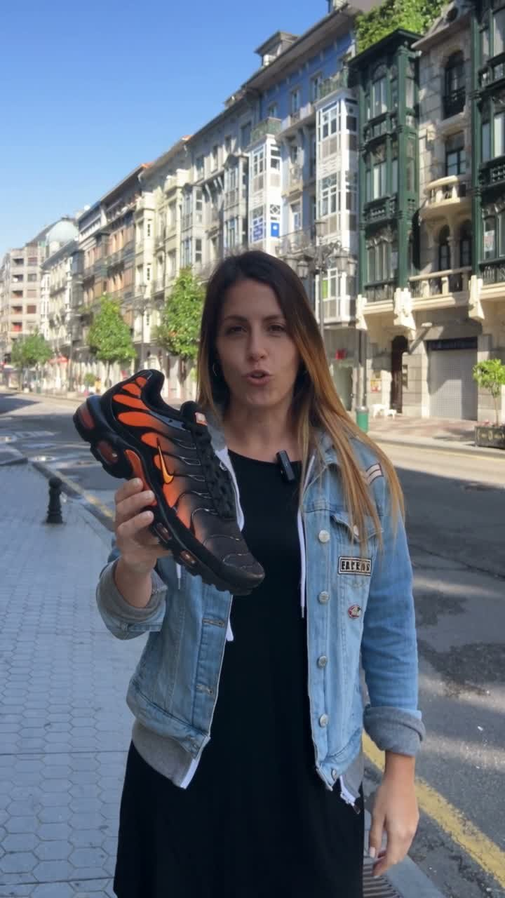
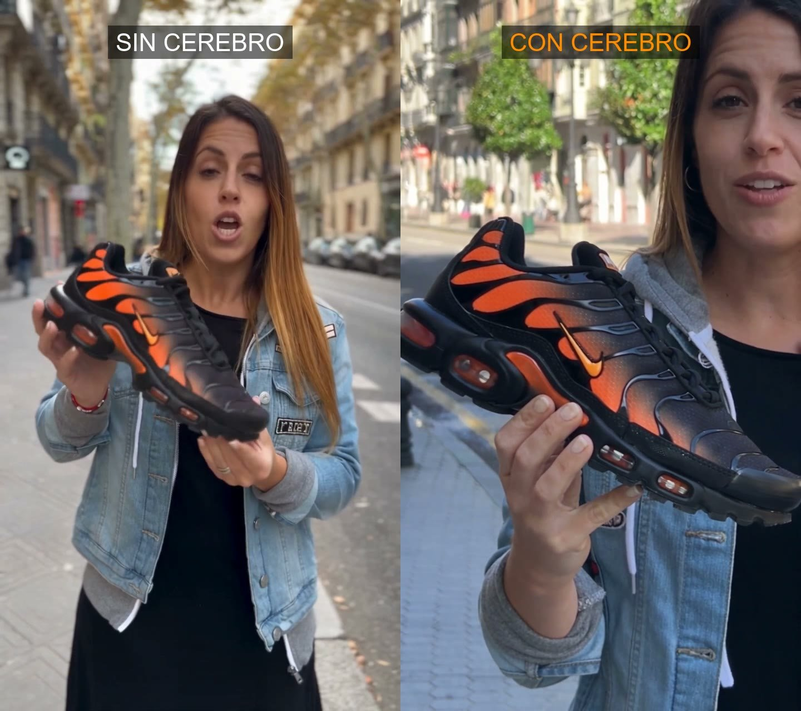

Referencia · 10 min
Los casos con cifras públicas: qué se repite en los que vendieron y en los que no.

Sacado de los casos con cifras públicas, no de opiniones. Lo que se repite en los que vendieron, y lo que se repite en los que no.

| Caso | Qué hicieron | Resultado | Qué enseña |
|---|---|---|---|
| Kalshi, final de la NBA (jun 2025) | Spot de 30 s hecho por una persona con Veo 3, 2.000 $ y 48 h. Entre 300 y 400 iteraciones de prompt para 15 clips útiles. Concepto absurdo a propósito. | Más de 20 millones de impresiones y prensa. | El concepto se eligió para que las rarezas del modelo parecieran intencionadas. Iterar mucho es parte del coste real. |
| Luo Yonghao × Baidu (jun 2025) | Avatar del presentador en un directo de 6 h con una base de 13.000 fichas de producto. | 7,6 M$ de ventas, 13 M de espectadores, categorías que superaron al humano. | El avatar es lo que se ve; lo que vende es la base de conocimiento de producto. |
| Hatch, dispositivo de sueño (Media.Monks + Gemini) | Creatividades generadas en flujo con brief estructurado y revisión humana. | Coste por compra −31 %, CTR +80 %, coste de producción −97 %. | Lo que escala es el sistema de briefing, no el modelo. |
| H&M, gemelos digitales (2025) | 30 modelos reales fotografiadas y clonadas para responder a tendencias en horas. | Producción de semanas a horas. | La velocidad de respuesta a tendencia es el beneficio, no el ahorro. |
| Coca-Cola, Navidad (2024 y 2025) | Spot nostálgico 100 % IA; la segunda versión "diez veces mejor" según la marca. | Rechazo público en 2024; mejor acogida en 2025. | La nostalgia y la emoción son el terreno donde la IA más se nota. Moda y producto, donde menos. |
| Estudios Ipsos y HBR (2026) | 20 anuncios reales, 3.000 consumidores; y campañas emparejadas humano/IA con el mismo brief. | Solo el 25 % identifica un anuncio IA con seguridad. Los IA rinden peor en venta y en marca aunque no se distingan. | Indistinguible no es eficaz. La diferencia está en el contexto de marca, no en el acabado. |
Un anuncio que vende, hoy, tiene esta forma: [registro que flattera al modelo] + [producto en mano en 3 s] + [gancho con fricción] + [voz nativa con la ficha exacta] + [cierre con condición real: precio, plazo, cambio] + [etiqueta IA]. La skill anuncio-ia del kit lo aplica paso a paso.
Fuentes: DesignRush, mejores campañas IA · 8frame, casos con cifras · Pragmatic, qué funcionó y por qué · inBeat, UGC IA vs real · Higgsfield, avatares vs creadores · Fast Company, 83 % no distingue · HBR, rinden peor aunque no se distingan · TechNode, caso Baidu
Semana de la IA 2026 · Cluster TIC Asturias · 25 de septiembre · Adrián Nicieza, edrian.exe · contacto@edrianexe.com · @edrian.exe
Contenido generado con ayuda de IA y revisado por un humano. Datos de la tienda de ejemplo, simulados.